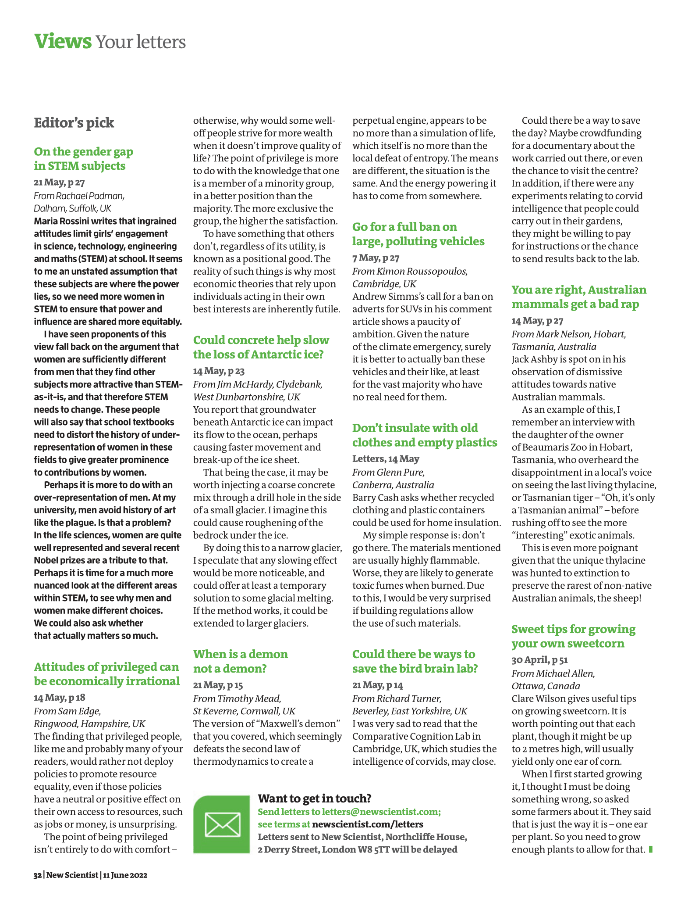

Overview
Can a text version of a page keep everything that is on the page? This post is about why the answer is usually no, and how we built a system for which it is yes.
Almost everything we do with documents at scale runs on text, not on pixels. Search indexes text. Retrieval chunks text. Translation rewrites text. Most importantly for our work, generating training data for document models means writing questions and answers about text. So the first step of nearly every document workflow is the same: convert the page to text.
That step is where information disappears. A page holds words, but it also holds a structure (headings, tables, lists), a geometry (where each block sits), and an appearance (size, weight, colour, a strikethrough, a stamp). Common conversions keep the words. Many keep some structure. Almost none keep geometry and appearance. Whatever the conversion drops, every system built on top of it has lost too.
REPLICA (ICDAR 2026, oral) is our answer. It has three parts, and this post follows them in order:
- FID-HTML, a representation. It is ordinary HTML with one rule: every element carries its position and its style. The paper writes it as Fid-HTML; this series writes FID-HTML.
- REPLICA, a method. Agents and deterministic tools split the work into four stages: Segment, Localize, Assemble and Refine. The last stage renders the HTML in a browser and compares the render with the source page.
- VFDR-Bench, a benchmark of 5,000 documents with three new metrics that score position and appearance, which earlier benchmarks did not score.
This post is the second in a series. The hub post tells the whole story in brief: a lossless text form of the page, grounding models that point with masks, and the loop that connects them. Here we go deep on the first idea, and end where it meets the second. A complete reconstruction is labelled by construction, so it can generate grounded training data. A model trained on that data, DocLayout-VL, then replaces REPLICA's own layout detectors.
What a page holds
Start with one concrete page: an invoice. List what it carries, one kind of information at a time.
- Text. The words and numbers: the seller, the line items, the amounts.
- Hierarchy. A title, a block of invoice details, a table with a header row and four item rows, a totals block. Hierarchy also includes reading order.
- Geometry. The seller's name sits top left and the invoice details top right. Each amount sits under the Amount column.
- Appearance. The total is bold. One line item is struck through. A red stamp says OVERDUE.
The REPLICA paper names these four axes Text Extraction, Logical Structure, Physical Structure and Visual Fidelity. They are the spine of everything that follows: the format must carry all four, the system must produce all four, and the benchmark must score all four.
Now convert the invoice, adding one axis at a time. Figure 1 does this live. The left side is the original. The right side starts as the text a typical OCR system returns and gains one layer per step.
Figure 1 · The same invoice, rebuilt one layer at a time
Swipe the figure sideways to see all of it.
The last step is the one most systems skip, and it changes what the document says. With the strikethrough lost, the four line items add up to 6,420.00. The page's own subtotal is 4,020.00, because the licence line was cancelled. A downstream model that reads the flattened text would compute the wrong amount, and nothing in its input would tell it so.
Which uses need which axes
Different downstream uses need different subsets of the four axes. Keyword search needs the words. Retrieval that chunks by section also needs the hierarchy. Retrieval by position ("the figure to the right of the table") needs geometry. Translating a form so it still looks like the same form needs all four. Generating grounded training data needs to know exactly where each element sits, so it needs geometry at least.
A team rarely knows in advance every use its converted documents will serve. So the useful target is a single conversion that keeps all four axes. Then search, retrieval, translation, archiving, accessibility and data generation can all start from the same file. The REPLICA paper lists six such applications: layout-preserving translation, document preservation, indexing and search, grounded document intelligence, semantic chunking for retrieval-augmented generation, and position-aware retrieval.
Why existing formats lose information
Before building a system, it is worth asking where the loss comes from. Is it the models, or something more basic?
Look at what each conversion is asked to write. OCR engines and many document vision-language models write plain text or Markdown. Pipeline tools such as Marker and Docling write Markdown, JSON or HTML. General vision-language models such as GPT-5 and Qwen3-VL, when asked for HTML, write generic HTML. SmolDocling writes DocTags, a markup with location tokens. hOCR, an older HTML-based OCR format, writes word boxes.
Each format has a fixed set of things it can say. Figure 2 shows the same part of the invoice written in five formats. Pick a format, then pick an aspect to see where, if anywhere, that aspect lives in the output.
Figure 2 · The same invoice in five output formats
The pattern has three causes, not one.
- No syntax at all. Plain text and Markdown cannot write down a coordinate or a font colour. However good the model, that information cannot reach the output.
- Partial syntax. LaTeX, DocTags and hOCR each carry part of the picture. In the paper's comparison, LaTeX carries styling but only partial boxes. DocTags and hOCR carry boxes. DocTags is partial on styling.
- Optional syntax. Generic HTML can express both position and style. But a
<div>with no style attribute is perfectly valid HTML. Two valid HTML files with the same text can render completely differently.
The third cause is the subtle one. HTML looks like the right target, and it nearly is. But a format that permits position does not make a system produce it. In practice, systems write the parts the format requires and leave out the parts it merely allows.
Table 1 reproduces the paper's comparison of representation formats along these lines. Columns are grouped by the four axes.
| Format | Content (text) | R.O. | L.H. | Tables | Lists | Figures | Formula | Hierarchy (physical) | Boxes (physical) | Styling (visual) |
|---|---|---|---|---|---|---|---|---|---|---|
| Markdown (md) | ✓ | P | ✓ | ✗ | ✗ | P | P | P | ✗ | ✗ |
| Markdown (mmd) | ✓ | P | ✓ | P | ✗ | P | P | P | ✗ | ✗ |
| LaTeX | ✓ | P | ✓ | ✓ | ✓ | ✓ | ✓ | ✓ | P | ✓ |
| DocTags | ✓ | P | ✓ | ✓ | ✓ | ✓ | ✓ | ✓ | ✓ | P |
| HTML | ✓ | P | ✓ | ✓ | ✓ | P | P | P | ✗ | ✓ |
| hOCR | ✓ | P | ✓ | ✓ | ✓ | P | P | ✓ | ✓ | ✓ |
| Qwen-HTML | ✓ | P | ✓ | ✓ | ✓ | P | P | P | ✗ | ✓ |
| Unstructured HTML | ✓ | P | ✓ | ✓ | ✓ | P | P | ✗ | ✗ | ✓ |
| FID-HTML | ✓ | ✓ | ✓ | ✓ | ✓ | ✓ | ✓ | ✓ | ✓ | ✓ |
How to read this table: each row is a format, and each column asks whether the format can represent that aspect. Read the last three columns. Every format except FID-HTML is partial or missing on at least one of them. Note that a ✓ here means the format can express the aspect; the HTML rows show that being able to express styling is not the same as producing it.
What real systems produce
Figure 3 shows real outputs from the paper's first figure. The input is a magazine letters page with three columns, green headings and italic bylines. Each system's HTML has been rendered in a browser.
Figure 3 · One page, four systems, rendered

Every baseline in the figure passes the text test. Every one of them fails on geometry and appearance. The failure is the same across a pipeline tool, a commercial model and an open model, which points at the target format and the single-pass design rather than at any one model.
FID-HTML: position and style are required
So we changed the target. FID-HTML is HTML that a browser renders and a language model can read. It differs from generic HTML in one rule: position and style are required, inline, on every element. Fidelity stops being something the format permits and becomes something it guarantees.
The paper defines six dimensions that FID-HTML encodes. One serves text, two serve logical structure, one serves physical position and two serve appearance:
- Textual content, kept at both word and block level, with line breaks and indents.
- Hierarchical structure, through nested
<div>containers for sections, subsections and logical groups. - Semantic tags, such as
<li>,<table>,<tr>and<td>, with meaningful class names. - Positional information: global placement through absolute positioning, and local alignment through relative containers and
<p>wrappers. - Styling metadata: font size, colour, bold, italics, underline and strikethrough, as inline CSS.
- Figures and backgrounds, layered into the page structure, with alt-text generated by a vision-language model.
Figure 4 shows real FID-HTML from VFDR-Bench: an excerpt of the ground truth for a dental fact sheet. Select a dimension to see where it lives in the code.
Figure 4 · Six dimensions in real FID-HTML
Three design choices in FID-HTML are worth spelling out, because each has a reason.
Why HTML and not a new format. HTML is web-native: any browser renders it with no special viewer. It is also what language models have read most of, so a model can consume FID-HTML directly. A custom format would need its own renderer and would be unfamiliar to every model.
Why inline styles. Inline styles keep each element self-contained. An element can be cut out of the page with its position and appearance attached, which is exactly what the data engine later needs.
Why absolute positions. A browser's flow layout decides where text lands from the text itself, the fonts and the container widths. Small differences in any of them move every block below. Absolute positions pin each block to where it was on the source page, so the render cannot drift far. Relative containers inside each block keep local alignment simple.
FID-HTML serves two roles in the paper. It is the output of REPLICA, and it is the annotation format of the benchmark. The second role matters as much as the first: you cannot score position or style against a Markdown reference.
Why one model in one pass is not enough
Given the target, the simplest system is one vision-language model that reads the page image and writes FID-HTML in one pass. That is what the general models in Figure 3 attempt, with generic HTML. Why does it fall short, even with a strong model?
Count what that single pass must do at once. It must detect every region, read every word, decide the type of each region, recover the tree, order the regions, write each one in the right markup, and attach a position and a style to every element. And it must do all of this in one stream of tokens, with no way to look at what it produced. A misplaced block early in the stream is never revisited.
Three properties of documents make this harder.
- Different content needs different skills. A table needs row and column structure. An equation needs math markup. A form needs field and value pairs. A single prompt that handles all of them does each less well.
- Geometry is better measured than generated. Detectors are fast, deterministic and precise at boundaries. A language model writing coordinates as tokens is none of these.
- Fidelity can only be checked on the render. HTML that looks right as text can render wrong, because a browser's box model differs from how the PDF placed the text. A model that never sees its render cannot see this error.
Prior work splits into lines along these properties. Pipeline parsers such as Marker and MinerU split the job into layout detection, OCR, and table and math parsing, then merge with rules. They produce solid Markdown, JSON or HTML, but typically linearise layouts and leave styling under-specified. End-to-end document models (Nougat, GOT-OCR 2.0, olmOCR, SmolDocling, Dolphin, MonkeyOCR) do the whole job in one model, mostly towards text or Markdown. Screenshot-to-HTML models (Design2Code, WebCode2M, WAFFLE) target web interfaces; some of that line uses iterative rendering and reflection, but the models generalise poorly to dense document pages. Physical reconstruction work such as DREAM models content and layout together to recover element positions, and PDFMathTranslate preserves layout for scientific documents.
REPLICA takes from each line what it does well. From pipelines it takes the split into stages and the use of deterministic tools. From vision-language models it takes judgment: what a region is, which specialist should handle it, what order a person reads in. From the screenshot-to-code line it takes the idea of checking the render. The organising principle is a division of labour.
Design principle
Agents handle judgment. Tools handle deterministic, reproducible steps. Each component gets the part of the job it does best, and the interface between them carries exactly what the next component needs.
The paper states this formally. Let 𝒜 be the set of agents and 𝒯 the set of tools. Agents perform semantic reasoning, routing, grouping and generation. Tools execute structured operations such as layout detection, position-aware merging and font fitting. Given a page image or PDF I, the goal is HTML H whose rendering R(H) matches I on all four axes. Note where the objective sits: on R(H), the render, not on H, the markup. That choice drives the last stage of the pipeline.
For background on agents, tools and multi-agent coordination in general, see The Making of an AI Agent and How Multi-Agent Systems Actually Coordinate. REPLICA is a fixed workflow rather than an open-ended agent: the stages and their order are set, and the agents make judgments inside them.
The REPLICA pipeline
REPLICA asks four questions in order, one per stage:
- Segment. How do we divide the document into meaningful components?
- Localize. How do we convert each component into equivalent HTML?
- Assemble. How do we put the components back into a coherent structure?
- Refine. How do we make the result look like the source?
Figure 5 runs the whole pipeline on one page. Tools are drawn as blue squares and agents as orange circles, so you can see at each step which kind of component is doing the work.
Figure 5 · REPLICA, stage by stage
Swipe the figure sideways to see all of it.
Segment: build the layout tree
The first stage builds a layout tree: every region, its type, its box and its parent. Four components share the work.
A document-type tool decides how to read the page. It classifies the input as born-digital or scanned. A born-digital PDF already contains its text spans, boxes and font metadata, so a PDF parser reads them directly and the visual detectors are skipped. Only scanned pages need detection.
A detector ensemble proposes regions. For scanned pages, three detectors run: DocLayout-YOLO for flat layouts, IndicDLP-YOLO for hierarchical structures, and Hi-SAM for fine-grained text segmentation. Their predictions are fused by overlap (IoU-based merging). The three are complementary: one finds blocks, one finds nested groups, and one finds text lines and words.
Detector proposals are driven by geometry. The paper lists their typical failures: they over-segment, they merge incompatible content, and they miss hierarchy. They also fail on borderless tables and multi-column wraps. So two agents take over.
A labelling agent judges what each region is. It assigns a structural label (paragraph, table, figure) and auxiliary attributes such as style or subtype. It uses Set-of-Mark prompting: each proposal is drawn on the page as a visible mark, so the vision-language model can refer to regions by their marks while reasoning about both their position and their content. This lets it spot regions that were cut in two and blocks that mix content types.
A grouping agent builds the tree. It forms a directed graph whose edges are parent-child relations, inferred from containment, reading order and semantic compatibility. Inconsistent or fragmented proposals are merged, reattached or discarded. Enforcing acyclicity and a single parent per node turns the graph into a tree. This step binds captions to their figures, nests lists, and attaches footnotes, none of which geometry alone can decide.
Localize: one specialist per region
The second stage turns each node of the tree into a fragment of HTML, called sub-HTML. Each node arrives with four things: its crop of the page, its box, the label from Segment, and structural constraints such as its parent's type.
A router agent checks before anything is generated. The paper's reason is direct: single-shot generation per region is brittle and prone to hallucination. The router looks at the crop itself, not only at the upstream label. If the crop contradicts the label, for example an equation labelled as text, it overrides the label and sends the region to the right specialist. A wrong label caught here costs one routing decision. Missed here, it becomes wrong HTML that every later stage inherits.
Six specialists write the HTML. There is one specialist each for text, tables, images, forms, lists and equations. Each writes sub-HTML with position and style inline.
Tools are called only when needed. The text specialist calls OCR for low-resolution or script-complex crops but skips it for clean digital text. The table specialist queries a table-structure recogniser when it sees merged headers or irregular grids, to get explicit row and column constraints. Text attributes such as bold, italic, underline and strikethrough come from TexTAR, a textual-attribute recogniser. Because nodes are conditionally independent given the tree, all regions can be processed in parallel.
The paper also mentions a colour-coded variant of Set-of-Mark prompting: boxes are marked with distinct colours instead of numbers or letters, which keeps mark labels from leaking into the generated HTML as text.
Assemble: merge, then order
The third stage turns many fragments into one document. It separates two questions that are easy to conflate: where things go, and in what order they are read.
A position-aware merge tool places the fragments. It composes bottom-up over the layout tree, so children go into their parents, while preserving containment, nesting and spatial alignment.
A reading-order agent decides the order. Sorting top to bottom and left to right fails on multi-column pages and floating elements. A newspaper page is the extreme case: articles are laid out in a grid, and a person reads one story at a time, not one row at a time. The agent judges textual continuity and contextual coherence across nodes, and the final HTML is linearised in that order. Reading-order accuracy, measured with Kendall's τ against the annotated order, is 0.98.
Refine: make it look right
Even when the first three stages are structurally correct, the rendered HTML can diverge from the source. The paper names the reason: a browser lays out text with the CSS box model, which differs from how the PDF placed it. Fonts render at different widths, lines wrap at different points, and text can overflow its box. The fourth stage is therefore the only one that looks at the render.
It has three components. A font-size tool picks the largest font size at which each text block does not overflow its box. A background-restoration tool recovers page-level visual cues (background colours, shading, overlays) and restores them with CSS layering and absolute positioning. In the implementation, the background is reconstructed with OpenCV inpainting guided by region masks. Finally, a reflection agent compares the render with the source and injects targeted CSS fixes, up to five times. The next section is about why this last step matters.
Who does what
- Document-type tooldecides born-digital or scanned, which decides how geometry is obtained
- PDF parserfor born-digital pages, reads text spans, boxes and font metadata directly
- Detector ensembleproposes regions on scanned pages; fast and precise, but blind to meaning
- Labelling agentdecides what each region is, and catches split or mixed regions
- Grouping agentdecides how regions nest into a tree: captions, lists, footnotes
- Router agentdecides which specialist handles each crop, overriding wrong labels
- Six specialistswrite sub-HTML for text, tables, images, forms, lists and equations
- OCR, table structure, TexTARsupply exact text, grids and text attributes when a specialist asks
- Position-aware mergecomposes fragments bottom-up over the tree
- Reading-order agentdecides the order a person would read in
- Font-size and background toolsfit text to its box and restore the page background
- Reflection agentcompares the render with the source and patches the CSS
Every agent in REPLICA runs on one backbone: Qwen3-VL-8B. Labelling and grouping, routing, the six specialists, and reflection all use it. The supporting tools are the three detectors, Gemma-3-4B-it for OCR, docTR for word localisation, TexTAR for text attributes, Surya's table-structure recogniser for tables, and textFit.js for font fitting. Structured output validation and bounded retries keep each fragment well-formed.
Checking the render, not the markup
Why should the last stage look at pixels at all? The words are already right by this point. The structure is right. The positions came from the detectors. What is left to check?
Consider a paragraph whose font is one point too large. Every word is correct. The tag is correct. The box is correct. But the text overflows its box and runs under the next block. Or a heading wraps onto two lines and pushes the paragraph below it out of place. Or a column of text runs underneath a pull quote. None of these errors is visible in the markup. A text similarity score between the output and the reference would not move, because the characters are identical. Only the render shows them.
Figure 6 runs the refine loop on one block. Watch the two meters: text similarity stays flat while the render changes.
Figure 6 · The render-and-compare loop
Swipe the figure sideways to see all of it.
The font-size tool is a bounded search. For each text block, it tries a size, renders, and checks whether the text overflows its box. If it overflows, the size goes down; if not, it goes up. Because overflow only gets worse as the size grows, a binary search finds the largest size that fits in a few renders. The paper reports that 97% of paragraphs end with no overflow (font fit success, 0.97).
The reflection agent is different in kind. It looks at the render and the source together, finds perceptual artifacts (overlaps, wrapping differences, misalignment), and injects targeted CSS: a layout adjustment, or a shape-outside rule so text wraps around a shape. It repeats until the render stabilises, for at most five iterations. Its contribution is measured as reflection gain, the average improvement in score per iteration:
Measuring visual faithfulness
A reconstruction that keeps position and style needs a benchmark that scores position and style. None existed. Existing benchmarks score text extraction (OCR benchmarks such as CC-OCR) or logical structure through tables (TableBank) and document-to-Markdown conversion (READoc, OmniDocBench, MDEval). None scores where a block lands on the page or what the page looks like.
VFDR-Bench
VFDR-Bench (Visually Faithful Document Reconstruction benchmark) has 5,000 documents. They span single- and multi-column layouts, scanned and born-digital sources, and many scripts. They cover more than 15 languages and more than 20 document categories. Every ground-truth page is annotated in FID-HTML by expert human annotators. The talk deck lists the kinds of pages: newspapers and periodicals; government and official records such as birth certificates, tenders and memoranda; textbooks and exam papers, including right-to-left scripts; business and finance documents such as statements and invoices with handwriting and rubber stamps; Indic and archival material on aged paper; and magazines.
| Benchmark | Images | Languages | Domains | Format | TE | LS | PS | VF |
|---|---|---|---|---|---|---|---|---|
| OmniAI OCR | 1,000 | 1 | n/a | md | ✓ | ✓ | ✗ | ✗ |
| OmniDocBench | 981 | 3 | 9 | txt | ✓ | ✗ | ✗ | ✗ |
| CC-OCR | 800 | 10 | 6 | txt | ✓ | ✗ | ✗ | ✗ |
| olmOCR-Bench | 1,403 | 1 | n/a | md | ✓ | ✓ | ✗ | ✗ |
| OCRBench v2 | 10,000 | 2 | 26 | md | ✓ | ✓ | ✗ | ✗ |
| READoc | 3,576 | 27 | 6 | md | ✓ | ✓ | ✗ | ✗ |
| dp-bench | 200 | 1 | 4 | md | ✓ | ✓ | ✗ | ✗ |
| KITAB-Bench | 917 | 1 | 9 | md | ✓ | ✓ | ✗ | ✗ |
| Image2Struct | 2,100 | 1 | 3 | LaTeX | ✗ | ✓ | ✗ | ✗ |
| VFDR-Bench | 5,000 | 15+ | 20+ | FID-HTML | ✓ | ✓ | ✓ | ✓ |
How to read this table: the last two columns are the ones the field had not measured. Among the benchmarks compared here, VFDR-Bench is the only one that scores physical structure and visual fidelity, and its annotation format is the only one that can hold them.
One metric family per axis
Each axis gets its own metrics. Two axes already had standard ones:
- Text extraction: character recognition rate (CRR) and word recognition rate (WRR).
- Logical structure: normalised tree edit distance (NTED) between the predicted and reference HTML trees, where lower is better. Tables are scored with TEDS and formulas with CDM.
The other two axes needed new metrics, and the paper introduces three:
- Global Position Score (GPS) scores where each layout block lands.
- Local Position Score (LPS) scores where each text line lands.
- Visual Fidelity Score (VFS) scores how the rendered page looks, using a vision-language model as a judge that compares the rendered HTML with the human-annotated ground truth.
How the position scores work
GPS and LPS share one recipe, applied to blocks for GPS and to lines for LPS. First, match each ground-truth element to at most one predicted element, using maximum overlap (IoU). Then compute two area-normalised quantities from the overlaps:
- Precision asks how much of the predicted area lies on real elements. Invented boxes add predicted area with no overlap, so they lower precision.
- Recall asks how much of the real element area is covered by matched predictions. Missed elements add ground-truth area with no overlap, so they lower recall.
The score is the harmonic mean (F1) of the two. The harmonic mean is low if either is low, so a system cannot score well by predicting one huge box (high recall, low precision) or a few tiny confident ones (high precision, low recall). Figure 7 lets you break a layout and watch the score respond.
Figure 7 · A position score you can break
Swipe the figure sideways to see all of it.
"Flatten to one column" is what Figure 3 showed Marker doing. Every word survives, so text metrics barely move, but most of the area no longer overlaps where it should, and the position score collapses.
Visual fidelity and the overall score
Appearance is harder to score with a formula. Font, colour, weight and spacing interact, and what matters is how the page looks to a person. So VFS asks a vision-language model to judge the rendered page against the rendered ground truth.
The overall score averages the four axes, so no system can score well by winning one axis:
Do the new metrics agree with people? The paper reports a Pearson correlation above 0.8 between the rankings induced by the metrics and the judgments of seven expert annotators, across 100 documents.
Evaluating the agents, not only the output
A system score says whether REPLICA works. It does not say which component failed when it does not. So the paper adds an agent-level protocol that scores intermediate decisions from execution traces. For Segment, Agnostic Text F1 and Agnostic Visual F1 score the geometric quality of text and visual region proposals with the same area-normalised F1 as GPS, ignoring labels (labels are resolved later). Hierarchy Consistency is the fraction of pages whose predicted tree satisfies the structural constraints. For Localize, routing accuracy is the fraction of regions routed correctly, and sub-HTML validity rate is the fraction of fragments that are valid DOM. Tools are scored by call success and by task-specific success rates. This is the same idea as trace-level evaluation for agents in general, discussed in The Agent Evaluation Playbook.
Results on VFDR-Bench
The paper compares REPLICA with fifteen baselines in four groups: pipeline tools (Marker, Docling), expert document models (rolmOCR, SmolDocling, olmOCR, Nanonets-OCR-s, GOT-OCR 2.0, ChatDoc-OCRFlux), general vision-language models (Qwen3-VL, Gemma 3, InternVL3, Gemini-2.5-Pro, GPT-5), and screenshot-to-HTML models (WebCode2M, WAFFLE). Figure 8 plots every method on every metric.
Figure 8 · Sixteen methods, one axis at a time
Read Figure 8 one axis at a time.
- Text extraction is passable for most strong systems: Marker reaches 0.68 WRR, Gemini-2.5-Pro 0.67, Qwen3-VL 0.66 and GPT-5 0.65. REPLICA reaches 0.88 WRR and 0.93 CRR.
- Logical structure separates the field. The OCR-style models sit near 0.9 NTED (lower is better) because they emit a flat stream with almost no tree. GPT-5 is the best baseline at 0.49. REPLICA reaches 0.20.
- Physical structure is where every baseline fails. The best baseline GPS is GPT-5's 0.43, and the best baseline LPS is Qwen3-VL's 0.22. REPLICA reaches 0.86 GPS and 0.73 LPS.
- Visual fidelity is high for the strongest general models: GPT-5 reaches 0.86 VFS and Gemini-2.5-Pro 0.82. REPLICA reaches 0.93.
Overall, REPLICA scores 0.86, against 0.58 for GPT-5, the best baseline. On the English subset it scores 0.93 and on Chinese 0.89. The claim is not that it wins one column. It is that it has no weak column.
An 8B agentic system against larger single models
All of REPLICA's agents run on Qwen3-VL-8B. The paper compares this with Qwen3-VL-30B used as a single model. REPLICA reaches 0.86 overall, against 0.47 for the Qwen3-VL row, a gain of 0.39. The paper reports this as a 39% overall gain at 3.75 times fewer parameters and comparable inference time.
Full results
| Method | WRR | CRR | NTED ↓ | LPS | GPS | VFS | OSall | OSen | OSzh |
|---|---|---|---|---|---|---|---|---|---|
| Pipeline tools | |||||||||
| Marker | 0.68 | 0.82 | 0.61 | 0.19 | 0.34 | 0.74 | 0.53 | 0.60 | 0.45 |
| Docling | 0.40 | 0.49 | 0.62 | 0.17 | 0.26 | 0.55 | 0.38 | 0.45 | 0.12 |
| Expert document models | |||||||||
| rolmOCR | 0.54 | 0.67 | 0.95 | 0.15 | 0.07 | 0.56 | 0.34 | 0.42 | 0.35 |
| SmolDocling | 0.37 | 0.54 | 0.89 | 0.16 | 0.23 | 0.54 | 0.28 | 0.35 | 0.02 |
| olmOCR | 0.49 | 0.64 | 0.93 | 0.21 | 0.09 | 0.33 | 0.31 | 0.38 | 0.34 |
| Nanonets-OCR-s | 0.25 | 0.42 | 0.94 | 0.18 | 0.10 | 0.56 | 0.26 | 0.34 | 0.31 |
| GOT-OCR 2.0 | 0.36 | 0.39 | 0.93 | 0.15 | 0.25 | 0.70 | 0.32 | 0.49 | 0.10 |
| ChatDoc-OCRFlux | 0.30 | 0.38 | 0.88 | 0.15 | 0.24 | 0.44 | 0.27 | 0.39 | 0.34 |
| General vision-language models | |||||||||
| Qwen3-VL | 0.66 | 0.79 | 0.59 | 0.22 | 0.30 | 0.43 | 0.47 | 0.48 | 0.31 |
| Gemma 3 | 0.58 | 0.59 | 0.85 | 0.19 | 0.25 | 0.38 | 0.36 | 0.42 | 0.37 |
| InternVL3 | 0.06 | 0.30 | 0.82 | 0.19 | 0.29 | 0.31 | 0.22 | 0.29 | 0.27 |
| Gemini-2.5-Pro | 0.67 | 0.42 | 0.56 | 0.14 | 0.31 | 0.82 | 0.47 | 0.47 | 0.30 |
| GPT-5 | 0.65 | 0.79 | 0.49 | 0.21 | 0.43 | 0.86 | 0.58 | 0.62 | 0.50 |
| Screenshot-to-HTML | |||||||||
| WebCode2M | 0.33 | 0.45 | 0.82 | 0.15 | 0.29 | 0.39 | 0.30 | 0.42 | 0.13 |
| WAFFLE (VLM WebSight) | 0.14 | 0.42 | 0.84 | 0.11 | 0.29 | 0.19 | 0.22 | 0.27 | 0.11 |
| REPLICA | 0.88 | 0.93 | 0.20 | 0.73 | 0.86 | 0.93 | 0.86 | 0.93 | 0.89 |
How to read this table: scan the LPS and GPS columns first. Every baseline sits at or below 0.22 LPS and 0.43 GPS; REPLICA is at 0.73 and 0.86. Then compare OSen with OSzh: most baselines drop sharply beyond English (SmolDocling falls from 0.35 to 0.02), while REPLICA stays at 0.93 and 0.89.
The language gap is consistent with the paper's robustness finding: existing approaches degrade sharply beyond English and Chinese, while REPLICA keeps high scores across the languages and document types in the benchmark. Tools trained on Indic and multilingual layouts (IndicDLP-YOLO, TexTAR) are part of the reason, which is one more case of giving each step to the component trained for it.
Agent and tool reliability
The trace-based evaluation scores each component on its own.
| Component | Metric | Score |
|---|---|---|
| Segment agents | Agnostic Text F1 (AT-F1) | 0.98 |
| Segment agents | Agnostic Visual F1 (AV-F1) | 0.99 |
| Segment agents | Hierarchy Consistency (HC) | 0.98 |
| Router agent | Routing Accuracy (RA) | 0.97 |
| Localize agents | Sub-HTML Validity Rate (SVR) | 0.96 |
| Reflection agent | Reflection Gain (RG) | +0.06 |
| Tools | Tool Call Success Rate (TCSR) | 0.995 |
| Tools | Reading Order Accuracy (ROA, Kendall's τ) | 0.98 |
| Tools | Font Fit Success (FFS) | 0.97 |
| Tools | Background Stitch Success (BSS) | 0.96 |
How to read this table: each row isolates one decision. The weakest numbers point at where errors enter: sub-HTML validity (0.96) and background stitching (0.96). Per-component rates also compound: a page with many regions passes through many 0.96 to 0.99 decisions.
What each stage buys
The ablation adds REPLICA's components one at a time, starting from a flat layout detector with no agents. Figure 9 steps through the nine configurations and tracks three scores: overall, visual fidelity and global position.
Figure 9 · Building REPLICA one component at a time
Swipe the figure sideways to see all of it.
Three lessons come out of the ablation.
Geometry is decided in Segment. The first four rows are all Segment improvements, and they carry GPS from 0.34 to 0.69. Hierarchical layout adds 0.14. Hi-SAM's fine text segmentation adds 0.15. Set-of-Mark labelling adds 0.06. Later stages add only 0.14 more GPS in total. A later stage can fix a font or a wrap, but it cannot recover a block that was never detected.
Specialisation beats a single generator. Moving from monolithic Localize to the router and six specialists lifts the overall score by 0.10, from 0.76 to 0.86. Visual fidelity and GPS rise too, but less; the main gain is in getting content right.
Refine adds the last step of fidelity. Font fitting, background restoration and reflection each add a little. Together they add 0.07 to the overall score and 0.07 to visual fidelity.
How the approaches compare
Table 5 puts the main families of document conversion side by side along the aspects this post introduced: what format they write, whether position and style are required, how the work is split, and whether the system checks its own render. The last two columns give the best score each family reached in the paper's main table.
| Approach | Examples | Output format | Position | Style | How the work is split | Checks its render | Best GPS | Best OSall |
|---|---|---|---|---|---|---|---|---|
| Pipeline parsers | Marker, Docling, MinerU | Markdown, JSON, HTML | not kept | under-specified | modules for layout, OCR, tables and math, merged by rules | no | 0.34 | 0.53 |
| End-to-end document models | olmOCR, GOT-OCR 2.0, SmolDocling, Nanonets-OCR-s | plain text, Markdown, DocTags | DocTags only, as tokens | little or none | one model, one pass | no | 0.25 | 0.34 |
| General VLMs | GPT-5, Gemini-2.5-Pro, Qwen3-VL | generic HTML | optional, usually omitted | optional | one model, one pass | no | 0.43 | 0.58 |
| Screenshot-to-HTML | WebCode2M, WAFFLE | HTML and CSS for web UIs | layout via CSS | yes | one model; some methods in this line iterate with rendering | in some methods | 0.29 | 0.30 |
| Physical reconstruction | DREAM, PDFMathTranslate | content with layout | yes | partial | end-to-end model (DREAM); scientific-document pipeline (PDFMathTranslate) | not reported | not evaluated | not evaluated |
| REPLICA | this work | FID-HTML | required on every element | required, inline | agents for judgment, tools for geometry and fitting, four stages | yes, up to 5 rounds | 0.86 | 0.86 |
How to read this table: the pattern to notice is that the two columns REPLICA changes, "Position" and "Checks its render", are the two that line up with the GPS gap. Families that do not require position score at most 0.43 GPS. Rows marked "not evaluated" were not part of the paper's benchmark comparison; the cells for them describe the published methods, not measured scores.
Limits, costs and open problems
The paper states three limitations, and the benchmark has limits of its own.
One page at a time. REPLICA reconstructs single pages. Structures that cross a page break, such as a table that continues on the next page or a figure split across pages, can fragment. The header row of a continued table, for example, lives on the first page only.
Font families. Bold, italics, underline and colour are recovered reliably. The exact font family is not. Existing font recognisers such as DeepFont mostly cover English and Chinese, and large-scale multilingual font recognition is still an open problem.
Rendering cost. The Refine stage renders the page in a browser several times. That costs latency compared with a single forward pass of one model. The paper reports comparable inference time to Qwen3-VL-30B, but no absolute latency.
Metric limits. VFS depends on a judge model. GPS and LPS reward correct boxes but cannot tell whether a correct box holds correct text; that is the job of the text metrics, which is why the overall score averages all four axes. And position metrics need a reference layout, so they work on a benchmark but not on unlabelled pages in production. There, the reflection agent's render comparison is the available signal.
From reconstruction to training data
This is where the first idea of the series meets the second. Every page REPLICA rebuilds comes out labelled by construction. Each element has its text, its place in the tree, its box and its style, all explicit, and each can carry an ID. That turns REPLICA into a data engine.
Consider how grounded question-answer data is usually made. A frontier vision-language model looks at a page image, writes a question and an answer, and writes a box for the evidence. One model does everything at once: read the text, infer the layout, reason, write the question, and type the coordinates. If any step is wrong, nothing shows it.
The REPLICA route splits the job. REPLICA does perception and writes FID-HTML. A language model reads the FID-HTML, which is the kind of text it reads well, writes a question, and cites the ID of the element that holds the answer. The ID maps straight back to a box in the FID-HTML. A segmenter turns the box into a pixel mask (the talk deck names Hi-SAM for this step). The language model that writes the questions never sees a pixel, which is exactly why it cannot invent a coordinate.
Figure 10 · From a rebuilt page to grounded training data, and back into REPLICA
Swipe the figure sideways to see all of it.
Each part of the data engine does one job:
- REPLICAperception: what is on the page and where, written as FID-HTML
- Language modelreasoning: a good question and the element that answers it, cited as an ID, never as coordinates
- Lookupmaps the cited ID to the element's box in the FID-HTML
- Segmenterturns the box into a pixel-accurate mask, which becomes the training target
The scale reported across the three grounding papers is about 2M grounded QA pairs for M3Grounder, 1.5M step-wise QA pairs plus 20K preference pairs for DoCoG, and 80M masks on 2.5M pages for DocLayout-VL. The details of each model are in the next posts of this series: M3Grounder, DoCoG and DocLayout-VL. For why grounding should be a mask and not a string of coordinates, see the hub post and When Language Must Point.
Closing the loop with DocLayout-VL
Return to the ablation. The Segment stage set the ceiling for geometry, and its first component is an ensemble of three off-the-shelf detectors, followed by two agents that repair what the detectors get wrong. Every later stage inherits the ensemble's mistakes.
Now look at what DocLayout-VL produces: a hierarchical, open-set layout tree for any page, with a mask for every region, and regions that can be asked for in words. That is the job REPLICA's Segment stage does with three detectors and two agents. DocLayout-VL was trained on data that REPLICA generated, about 80M masks on 2.5M pages. It now takes the place of the detector ensemble in REPLICA's Segment stage.
The two halves of the series now feed each other. REPLICA's reconstructions generate the training data. The data trains grounding models. The layout model among them improves the first stage of REPLICA, which produces better reconstructions, which produce better data.
What should you be able to reason about now? Why a text form of a page loses information, and that the loss is mostly decided by the target format. Why a format must require position and style rather than permit them. Why a decomposed system with checks can beat a larger single model, and why the strongest check is on the render. How to score geometry separately from appearance. And how a complete reconstruction turns into grounded training data. The next post picks up that data and asks what kind of model should learn from it.
Key insights and nuances
- Appearance can be content. A strikethrough or a stamp can reverse a document's meaning, so appearance needs its own metric. (What a page holds)
- What a format does not require, a system does not produce. GPT-5 writes HTML yet reaches only 0.43 GPS; specify required fields and validate them. (Why formats lose)
- Absolute positions trade reflow for fidelity. Keep FID-HTML as the complete record and derive lighter views from it. (FID-HTML)
- Verify before the expensive step. The router before generation gives the largest single gain in the ablation (0.76 to 0.86 overall). (Pipeline)
- Check the render, not the markup. Text similarity is blind to overflow, wrapping and overlap; in the ablation, reflection adds 0.04 visual fidelity. (Render and compare)
- A page can look right without being the page. High visual fidelity with low GPS (GPT-5: 0.86 and 0.43) means plausible, not faithful. (Results)
- Structure can substitute for scale. An 8B agentic system scores 0.86 overall against 0.47 for a 30B single model; the 39% is in score points. (Results)
- The upstream stage sets the ceiling. Segment improvements carry GPS from 0.34 to 0.69, which is why replacing the detector ensemble matters most. (Ablations)
- Use the judge metric for ranking. VFS correlates above 0.8 with expert rankings but relies on an unnamed judge model. (Measuring)
- Completeness makes grounding a lookup. Because FID-HTML keeps every box, the question writer cites IDs and never types coordinates. (Data engine)
- The loop's benefit is expected, not yet measured. DocLayout-VL replaces the ensemble, but REPLICA with DocLayout-VL has no published VFDR-Bench score yet. (Closing the loop)
References
Grouped by topic. Every entry links to its primary source.
The paper
- REPLICA: An Agentic Framework for Visually Faithful Document Reconstruction · Raghuveer, Srinivasan, Venna, Sreevatsa, Jain, Kukkala, Sarvadevabhatla, ICDAR 2026, Oral, pp. 505–522
- REPLICA project page, with the camera-ready paper, the talk slides and the pipeline walkthrough
- VFDR-Bench dataset · Hugging Face
Document parsing pipelines
- Marker · Paruchuri, 2025
- Docling: An Efficient Open-Source Toolkit for AI-driven Document Conversion · Livathinos et al., 2025
- MinerU: An Open-Source Solution for Precise Document Content Extraction · Wang et al., 2024
End-to-end document models
- Nougat: Neural Optical Understanding for Academic Documents · Blecher et al., 2023
- General OCR Theory: Towards OCR-2.0 via a Unified End-to-end Model (GOT-OCR 2.0) · Wei et al., 2024
- olmOCR: Unlocking Trillions of Tokens in PDFs with Vision Language Models · Poznanski et al., 2025
- SmolDocling: An ultra-compact vision-language model for end-to-end multi-modal document conversion (DocTags) · Nassar et al., 2025
- Dolphin: Document Image Parsing via Heterogeneous Anchor Prompting · Feng et al., 2025
- MonkeyOCR: Document Parsing with a Structure-Recognition-Relation Triplet Paradigm · Li et al., 2025
General vision-language models
- Qwen3-VL Technical Report · Bai et al., 2025
- Qwen3 Technical Report · Yang et al., 2025
- Gemma 3 Technical Report · Gemma Team, 2025
- InternVL3: Exploring Advanced Training and Test-Time Recipes for Open-Source Multimodal Models · Zhu et al., 2025
- Gemini 2.5: Pushing the Frontier with Advanced Reasoning, Multimodality, Long Context, and Next Generation Agentic Capabilities · Comanici et al., 2025
- GPT-5 System Card · OpenAI, 2025
Screenshot-to-code and physical reconstruction
- Design2Code: Benchmarking Multimodal Code Generation for Automated Front-End Engineering · Si et al., 2024
- WebCode2M: A Real-World Dataset for Code Generation from Webpage Designs · Gui et al., 2024
- WAFFLE: Finetuning Multi-Modal Models for Automated Front-End Development · Liang et al., 2024
- Automatically Generating UI Code from Screenshot: A Divide-and-Conquer-Based Approach · Wan et al., 2024
- Zero-Shot Prompting Approaches for LLM-based Graphical User Interface Generation · Kolthoff et al., 2024
- DREAM: Document Reconstruction via End-to-end Autoregressive Model · Li et al., 2025
- PDFMathTranslate: Scientific Document Translation Preserving Layouts · Ouyang et al., 2025
Tools inside REPLICA
- DocLayout-YOLO: Enhancing Document Layout Analysis through Diverse Synthetic Data and Global-to-Local Adaptive Perception · Zhao et al., 2024
- IndicDLP: A Foundational Dataset for Multi-Lingual and Multi-Domain Document Layout Parsing · Nath, Kukkala, Khapra, Sarvadevabhatla, ICDAR 2025
- Hi-SAM: Marrying Segment Anything Model for Hierarchical Text Segmentation · Ye et al., 2024
- Set-of-Mark Prompting Unleashes Extraordinary Visual Grounding in GPT-4V · Yang et al., 2023
- TexTAR: Textual Attribute Recognition in Multi-domain and Multi-lingual Document Images · Kumar, Jinka, Sarvadevabhatla, ICDAR 2025
- docTR: Document Text Recognition · Mindee
- Surya (table structure recognition) · Datalab
- textFit · Reed, 2014
- Image inpainting in OpenCV · OpenCV documentation
Benchmarks and metrics
- OmniDocBench: Benchmarking Diverse PDF Document Parsing with Comprehensive Annotations · Ouyang et al., 2024
- READoc: A Unified Benchmark for Realistic Document Structured Extraction · Li et al., 2024
- TableBank: A Benchmark Dataset for Table Detection and Recognition · Li et al., 2019
- MDEval: Evaluating and Enhancing Markdown Awareness in Large Language Models · Chen et al., 2025
- CC-OCR: A Comprehensive and Challenging OCR Benchmark for Evaluating Large Multimodal Models in Literacy · Yang et al., 2024
- Image-based table recognition: data, model, and evaluation (TEDS) · Zhong et al., 2019
- Image Over Text: Transforming Formula Recognition Evaluation with Character Detection Matching (CDM) · Wang et al., 2024
- Tree edit distance: Robust and memory-efficient · Pawlik and Augsten, Information Systems, 2016
Grounding and the loop
- Segment Anything · Kirillov et al., 2023
- M3Grounder: Mask-Based Multi-Span and Multi-Granular Grounding for Document QA · Venna, Gunda, Jinka, Rachakonda, Srinivasan, Sarvadevabhatla, CVPR 2026
- DoCoG: Mask-based Multi-Type Grounded Chain-of-Thought for Document QA · Gunda, Jinka, Rachakonda, Jain, Venna, Srinivasan, Sarvadevabhatla, ECCV 2026, Spotlight
- DocLayout-VL: A Foundational Model for Hierarchical, Open-set, and Promptable Document Layout Segmentation · Venna, Bandarupalli, Srinivasan, Raghuveer, Gunda, Sarvadevabhatla, ECCV 2026